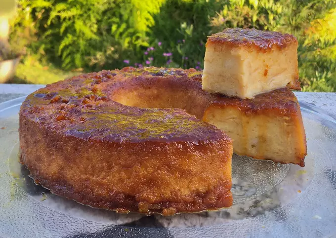
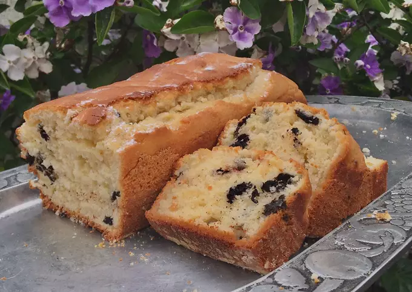
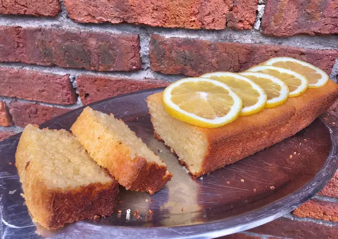
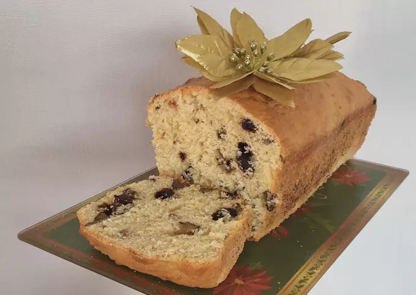
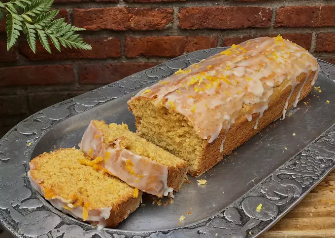
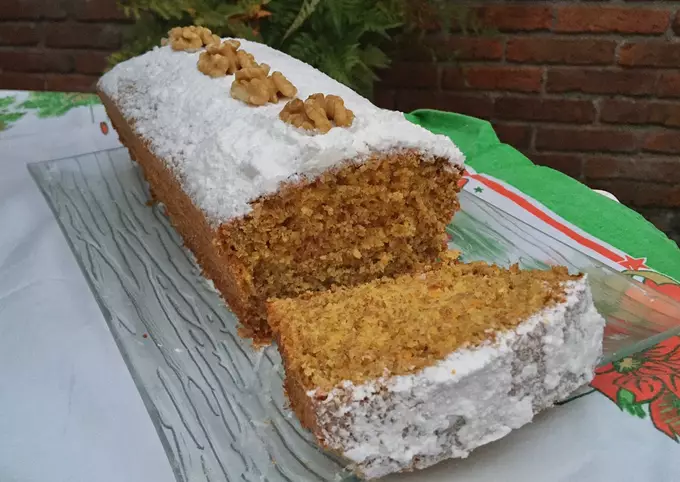
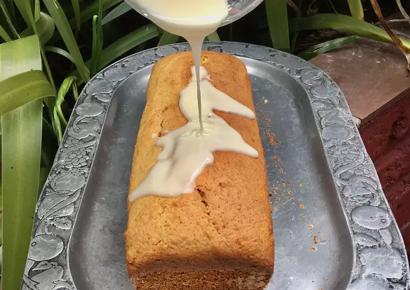

Tortas y Budínes

Budín de chocolate y pera

Budín de banana

Budín de chocolate relleno de dulce de leche

Budín de coco

Budín de pan

Budín de vanilla oreo

Budín de vanilla

Budín ingles economico

Budín integral de naranja

Carrot cake integral

Glasé de naranja